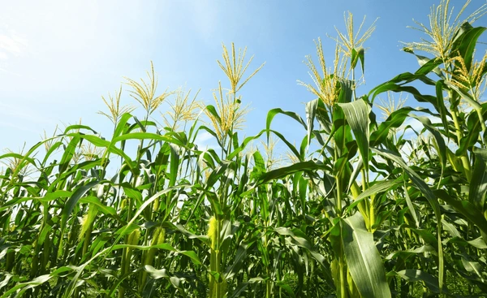

AgroDataAnalytics es una plataforma desarrollada como parte del proyecto académico Proyecto para identificar y analizar los cultivos estratégicos en el Atlántico frente al panorama regional, con el fin de reconocer oportunidades de mejora y potenciar el desarrollo del sector en la región Caribe (2015–2025), iniciativa del SENA orientada al análisis del sector agrícola desde una perspectiva técnica y basada en datos. Esta plataforma integra información proveniente de sistemas de información geográfica, bases de datos oficiales del Gobierno Nacional y recursos estadísticos que permiten comprender mejor la evolución del sector agropecuario en la región. Su propósito es convertir grandes volúmenes de datos en conocimiento aplicable que facilite la toma de decisiones y contribuya al fortalecimiento del desarrollo rural y productivo en el departamento del Atlántico.

AgroDataAnalytics es una herramienta creada dentro del marco del proyecto académico para la identificación y análisis de cultivos estratégicos en el Atlántico, desarrollado por aprendices del Técnico en Programación para Análisis de Datos del SENA. Su función es recopilar, organizar y analizar información agrícola para ofrecer una visión clara sobre el comportamiento del suelo, el clima, los cultivos predominantes y el estado de la frontera agrícola, con el fin de apoyar procesos de planificación y orientar decisiones informadas. A través de esta plataforma se busca complementar los objetivos del proyecto académico, proporcionando un espacio digital donde se pueda visualizar y comprender el panorama agrícola actual y las tendencias del sector en el Caribe colombiano.

El desarrollo de AgroDataAnalytics es importante porque responde a una necesidad real del departamento del Atlántico: la subutilización de su potencial agrícola. Aunque la región cuenta con una amplia extensión de tierras aptas para la producción, estudios recientes indican que solo se aprovecha alrededor del 3.8 % de este potencial. Este escenario refleja una falta de información accesible y confiable que permita identificar oportunidades de mejora, orientar los cultivos más convenientes y fortalecer la competitividad regional. La plataforma contribuye a cerrar esa brecha al ofrecer análisis detallados del territorio, presentar datos históricos y actuales, y facilitar la identificación de cultivos estratégicos entre 2015 y 2025, alineándose con los objetivos del proyecto académico de potenciar el desarrollo agrícola del Caribe colombiano.
Datos integrados de laboratorios agrícolas y cartografía municipal del DANE. Explora los cultivos presentes y la extensión sembrada en cada municipio del país